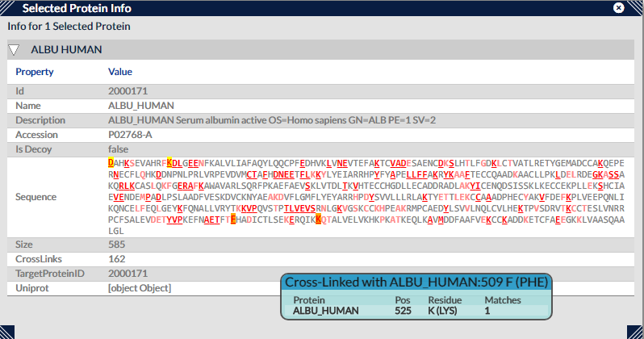

This view shows tabular information for selected proteins (if it's empty, there are no proteins selected). For the most part it's an un-interactive view, displaying details associated with a protein such as its name, description, accession number, size, the number of cross-links it is involved with etc.
However, the data associated with the "Sequence" row is dynamic and interactive. Here, the protein sequence is displayed as a string, with residues involved with the current filtered set of cross-links highlighted in red and underlined. Moving the mouse pointer over one of these residues displays the cross-links it is involved with in a tooltip, and in the case of self-links will also highlight the residues at the other ends of these cross-links. Residues that do have cross-links associated with them but are currently filtered out are shown in pink, while residues with no cross-links are shown in grey. It is also useful as a quick sanity check when we know only certain residues (i.e. KSTY) should ever be cross-linked due to the type of cross-linker used in the experiment the current search is sourced from.
Selection can again be performed by left-clicking on a residue, and again any selections or highlighting performed in this view are reflected in other active views and vice versa.
Lastly, like the other views that sit in sub-panels, this view can be resized by clicking on and dragging its corners, and repositioned by clicking on and dragging the title bar. The view can be closed using the X button next to the top right-hand corner.